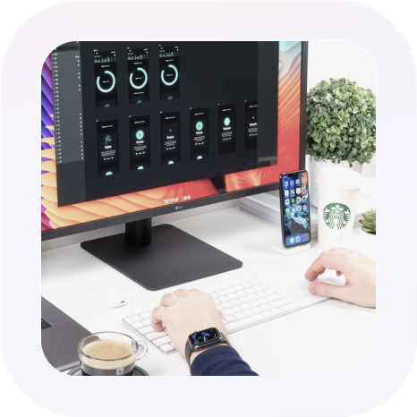

A creative team which builds stunning UI/UX
Today, I'd like to show you some incredible Sign Up screen app UI ideas and concepts that offer a modern user experience. The most stunning, cutting-edge UI/UX.
Klean is a free Bootstrap 5 template for multipurpose landing pages. This design is a perfect choice, carefully curated by ThemeWagon
Devoted to defining the cutting edge
"This new creation is cutting-edge technology," says the researcher, "whose study originates from a business at the forefront of space science."
Klean is a free Bootstrap 5 template for multipurpose landing pages. This design is a perfect choice, carefully curated by ThemeWagon